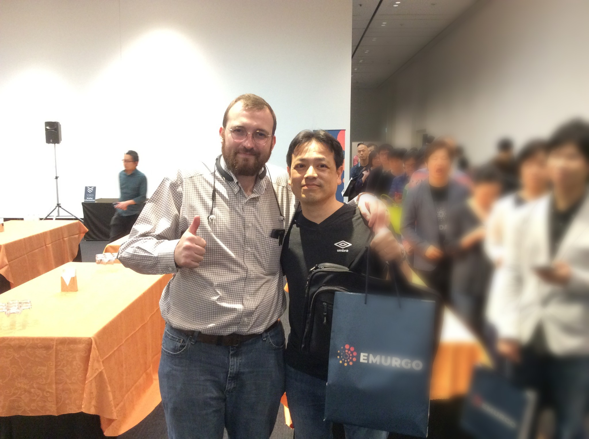
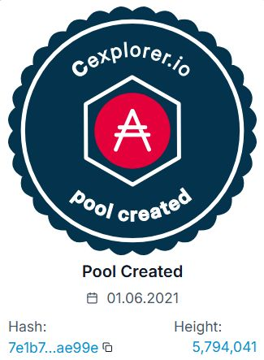
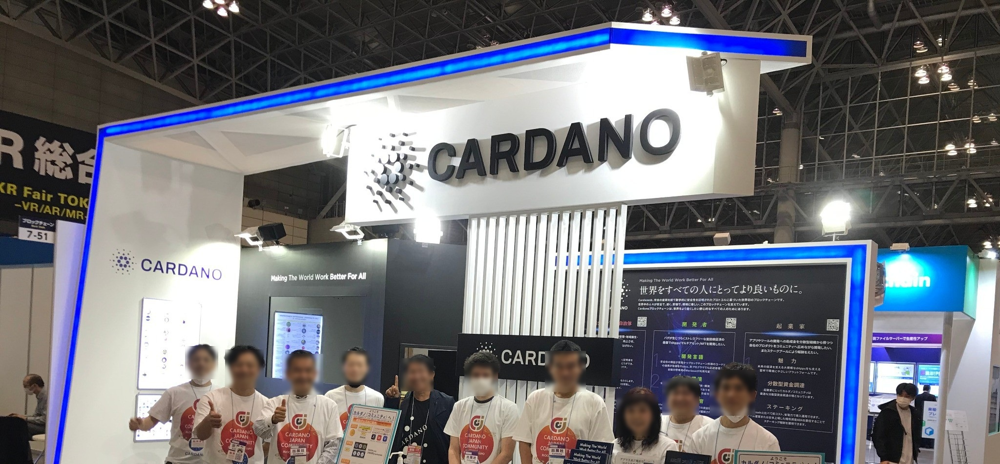
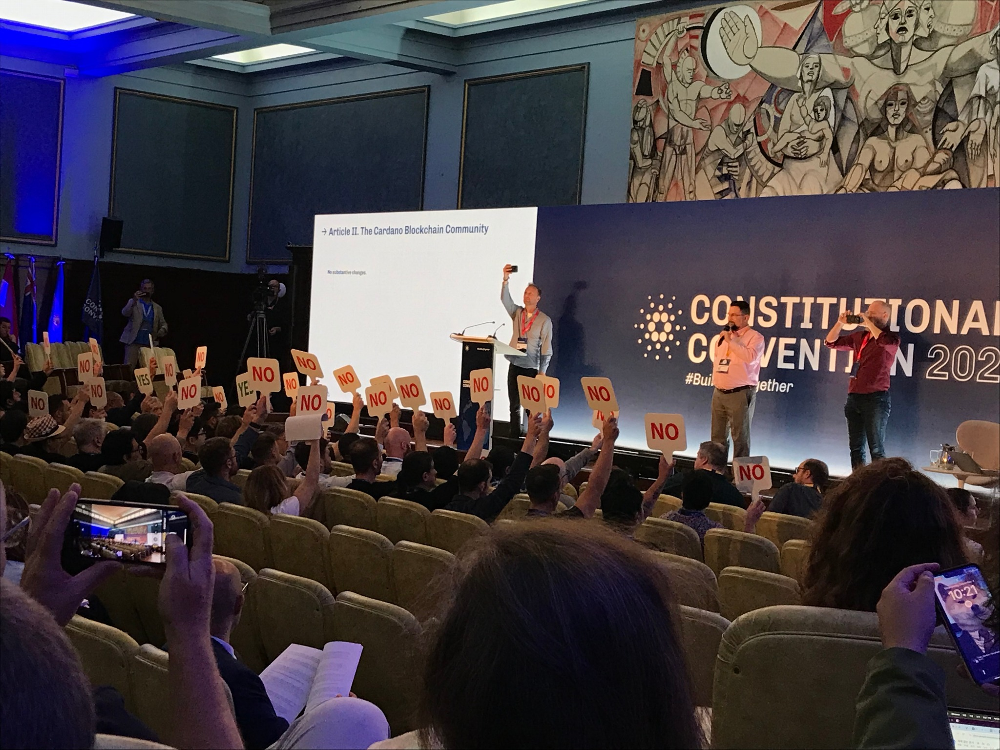

2018
The Beginning
Cardanoのイベントに初参加。ここから歩みが始まりました。
Cardanoとともに歩み、未来へつなぐ。
日本語での情報発信から始まり、Stake Pool運営、リアルイベント、 ガバナンスへの参加へ。AID1は、長期的な活動を通じてCardanoを支えています。
Mission
AID1はStake Poolの運営だけでなく、情報発信、コミュニティ活動、 そしてガバナンスへの参加を通じて、日本におけるCardanoの発展に 貢献することを目指しています。
Our journey
Cardanoとの出会いから、情報発信、プール運営、普及活動、ガバナンスへ。

2018
Cardanoのイベントに初参加。ここから歩みが始まりました。

2021.06
Cardanoネットワークを支えるため、AID1を立ち上げました。

2021–2026
Blockchain EXPOで、Cardanoを直接紹介する活動を継続しました。

2024.12
ブエノスアイレスでCardano憲法制定会議に参加しました。

2026.06
AID1は5周年を迎えました。これからも活動を続けます。
Why AID1
AIDは「Aid（支援）」という言葉に由来しています。 Stake Poolの安定運営を基盤としながら、Web3とCardanoの普及、 さらに地域や貧困への支援、公平で公正な社会づくりへ、 得られた価値を少しずつ還元していきたいと考えています。
Delegate to AID1
DaedalusやLaceなどのウォレットで、Ticker「AID1」を検索してください。 委任してもADAそのものがプールへ移動することはありません。
Latest updates